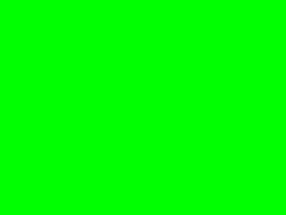

Loading Text File Shaders

Last Updated 10/19/14
In the last tutorial we hard coded the GLSL shader code in our OpenGL application for the sake of simplicity. But when you're trying to develop a shader program, having to recompile your application each time to make changes gets to be a pain. In this tutorial, our OpenGL application will load the GLSL source code on the fly.From LShaderProgram.h
GLuint loadShaderFromFile( std::string path, GLenum shaderType );
/*
Pre Condition:
-None
Post Condition:
-Returns the ID of a compiled shader of the specified type from the specified file
-Reports error to console if file could not be found or compiled
Side Effects:
-None
*/
The base shader class gets a new function to load a text GLSL source file and compile it to the type of shader you want (vertex, fragment, geometry, etc).
From LShaderProgram.cpp
GLuint LShaderProgram::loadShaderFromFile( std::string path, GLenum shaderType )
{
//Open file
GLuint shaderID = 0;
std::string shaderString;
std::ifstream sourceFile( path.c_str() );
//Source file loaded
if( sourceFile )
{
//Get shader source
shaderString.assign( ( std::istreambuf_iterator< char >( sourceFile ) ), std::istreambuf_iterator< char >() );
To compile a text source file at runtime, you need to get the text from the file as a single string. After opening the file as an ifstream, we can use the input stream buffer
iterator to read it in as one line.
The standard string function assign() just gives the string a value. The first argument tells it to start reading the source file from the beginning. The second argument tells it to keep reading the source file until it encounters a null character.
The standard string function assign() just gives the string a value. The first argument tells it to start reading the source file from the beginning. The second argument tells it to keep reading the source file until it encounters a null character.
From LShaderProgram.cpp
//Create shader ID
shaderID = glCreateShader( shaderType );
//Set shader source
const GLchar* shaderSource = shaderString.c_str();
glShaderSource( shaderID, 1, (const GLchar**)&shaderSource, NULL );
//Compile shader source
glCompileShader( shaderID );
//Check shader for errors
GLint shaderCompiled = GL_FALSE;
glGetShaderiv( shaderID, GL_COMPILE_STATUS, &shaderCompiled );
if( shaderCompiled != GL_TRUE )
{
printf( "Unable to compile shader %d!\n\nSource:\n%s\n", shaderID, shaderSource );
printShaderLog( shaderID );
glDeleteShader( shaderID );
shaderID = 0;
}
}
else
{
printf( "Unable to open file %s\n", path.c_str() );
}
return shaderID;
}
The rest of this function should all look familiar because it's a generalized version of the vertex/fragment shader compilation code from the last tutorial.
From LPlainPolygonProgram2D.cpp
bool LPlainPolygonProgram2D::loadProgram()
{
//Generate program
mProgramID = glCreateProgram();
//Load vertex shader
GLuint vertexShader = loadShaderFromFile( "30_loading_text_file_shaders/LPlainPolygonProgram2D.glvs", GL_VERTEX_SHADER );
//Check for errors
if( vertexShader == 0 )
{
glDeleteProgram( mProgramID );
mProgramID = 0;
return false;
}
//Attach vertex shader to program
glAttachShader( mProgramID, vertexShader );
//Create fragment shader
GLuint fragmentShader = loadShaderFromFile( "30_loading_text_file_shaders/LPlainPolygonProgram2D.glfs", GL_FRAGMENT_SHADER );
//Check for errors
if( fragmentShader == 0 )
{
glDeleteShader( vertexShader );
glDeleteProgram( mProgramID );
mProgramID = 0;
return false;
}
//Attach fragment shader to program
glAttachShader( mProgramID, fragmentShader );
//Link program
glLinkProgram( mProgramID );
//Check for errors
GLint programSuccess = GL_TRUE;
glGetProgramiv( mProgramID, GL_LINK_STATUS, &programSuccess );
if( programSuccess != GL_TRUE )
{
printf( "Error linking program %d!\n", mProgramID );
printProgramLog( mProgramID );
glDeleteShader( vertexShader );
glDeleteShader( fragmentShader );
glDeleteProgram( mProgramID );
mProgramID = 0;
return false;
}
//Clean up excess shader references
glDeleteShader( vertexShader );
glDeleteShader( fragmentShader );
return true;
}
Here we have the shader program loading code with our new condensed vertex shader loading function.
You'll see that source file for the vertex shader is LPlainPolygonProgram2D.glvs. The source file has the matching file name LPlainPolygonProgram2D.glvs because it makes it easier to keep track of the files. The extensions glvs and glfs correspond to the vertex and fragment shader also because it makes the files easier to manage. The file name and extension don't mean anything to the program because it just assumes they're ASCII text anyways.
About the calls to glDeleteShader(): you'll notice that if the fragment shader load fails we delete the vertex shader because it's useless to us if the fragment shader doesn't compile. We delete the vertex and the fragment shader if they fail to link because if they don't link they're useless on their own. What you may think is strange is that we delete the vertex and fragment shader if the program links successfully. Don't worry, all we're deleting when we delete a shader from an existing program is the spare references to the shaders. The OpenGL context is smart enough to know that if a shader program is using the shader to not delete it.
You'll see that source file for the vertex shader is LPlainPolygonProgram2D.glvs. The source file has the matching file name LPlainPolygonProgram2D.glvs because it makes it easier to keep track of the files. The extensions glvs and glfs correspond to the vertex and fragment shader also because it makes the files easier to manage. The file name and extension don't mean anything to the program because it just assumes they're ASCII text anyways.
About the calls to glDeleteShader(): you'll notice that if the fragment shader load fails we delete the vertex shader because it's useless to us if the fragment shader doesn't compile. We delete the vertex and the fragment shader if they fail to link because if they don't link they're useless on their own. What you may think is strange is that we delete the vertex and fragment shader if the program links successfully. Don't worry, all we're deleting when we delete a shader from an existing program is the spare references to the shaders. The OpenGL context is smart enough to know that if a shader program is using the shader to not delete it.
From LUtil.cpp
bool loadGP()
{
//Load basic shader program
if( !gPlainPolygonProgram2D.loadProgram() )
{
printf( "Unable to load basic shader!\n" );
return false;
}
//Bind basic shader program
gPlainPolygonProgram2D.bind();
return true;
}
bool loadMedia()
{
return true;
}
void update()
{
}
void render()
{
//Clear color buffer
glClear( GL_COLOR_BUFFER_BIT );
//Reset transformations
glLoadIdentity();
//Solid cyan quad in the center
glTranslatef( SCREEN_WIDTH / 2.f, SCREEN_HEIGHT / 2.f, 0.f );
glBegin( GL_QUADS );
glColor3f( 0.f, 1.f, 1.f );
glVertex2f( -50.f, -50.f );
glVertex2f( 50.f, -50.f );
glVertex2f( 50.f, 50.f );
glVertex2f( -50.f, 50.f );
glEnd();
//Update screen
glutSwapBuffers();
}
As you can see our main functions haven't changed much yet we get this when we run the program:
Let's look at our GLSL source files to see why.
Let's look at our GLSL source files to see why.
From LPlainPolygonProgram2D.glvs
void main()
{
//Process vertex
gl_Position = gl_Vertex;
}
So it looks like we're still using untranformed vertices to render.
From LPlainPolygonProgram2D.glfs
void main()
{
//Set fragment
gl_FragColor = vec4( 0.0, 1.0, 0.0, 1.0 );
}
And the reason it's green now is because all fragments are getting the value red 0, green 1, blue 0, and alpha 1. Fortunately now we can mess with the GLSL code without a recompile.